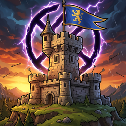

Aldmere Support
Aldmere: Kingdom Defense
Contact
Email m_shrayyef90@hotmail.com. Please include your device model and iOS version; we usually reply within two days.
I bought a hero on another device. How do I get it back?
Open the world map, tap Heroes, then Restore purchases. Use the same Apple ID you bought with.
My progress is missing on a new device
Progress syncs through iCloud. Make sure you are signed in to the same Apple ID and that iCloud is on for Aldmere (Settings → your name → iCloud). Open the game once on the old device so it can sync.
Gems or helpers didn't arrive after a purchase
Close and reopen the game while online; pending purchases are delivered on launch. If they still don't appear, email us with the date of purchase.
A level is too hard
Tap enemies to see what beats them, upgrade towers, and spend stars on permanent upgrades (star button on the map). Every level can be won without buying anything.